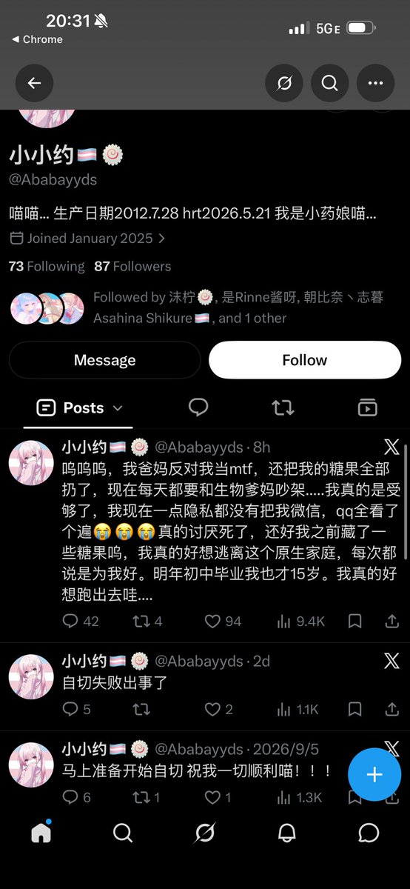

f hv
@fhv932189957574
@RX_Xron28390
我只是怕了

𝑇𝑦𝑟 𝑉𝑜𝑛 𝑊𝑒𝑙𝑡
@RX_Xron28390
虽然90后说00后是最完蛋的一代，但我真觉得下一代10人类要玩几把蛋了
我都不敢想10年后最后一批10成年社会得成啥样子 https://t.co/ZBjIRpL3zr
f hv
@fhv932189957574
@nuanguangshi @Ababayyds 我说反跨其实是反对你们这些神人有没有懂的，让14岁小孩去卖还支持，一群贱逼Sb居然敢伪装人类，就是跨圈不断在互相加强妄想，成为跨性别不需要混跨圈